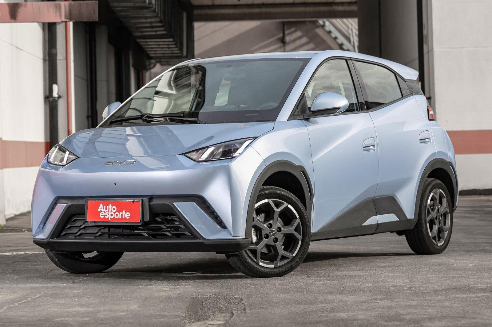

BYD Dolphin Mini é o primeiro elétrico a entrar no top 3 de vendas do Brasil
Hatch somou 9.385 emplacamentos em setembro, atrás só de Fiat Strada e VW Polo; BYD fica em 4º entre as marcas.

Pela primeira vez no fechamento de um mês, um carro elétrico aparece entre os três mais vendidos do Brasil. Segundo a Autoesporte, o BYD Dolphin Mini emplacou 9.385 unidades em setembro de 2026, somando vendas diretas e varejo, e ficou atrás apenas da Fiat Strada (16.002) e do Volkswagen Polo (11.095).
Considerando só o varejo, o hatch foi o mais vendido do país pela sétima vez no ano, com 5.886 unidades no mês, à frente de VW Tera, Fiat Strada, Caoa Chery Tiggo 7 e VW T-Cross. Entre os sedãs médios, o BYD King somou 1.666 unidades, cerca de três vezes o Toyota Corolla (475).
No ranking de marcas, a BYD voltou ao quarto lugar, com 22.209 emplacamentos, atrás de Fiat, Volkswagen e General Motors, e abriu vantagem sobre Hyundai, Toyota e Jeep.
Entre os elétricos, a marca chinesa registrou 14.317 unidades, bem acima de Geely e GAC; nos híbridos plug-in, puxados por Song Pro e Song Plus, foram 7.756, à frente de GWM e Omoda Jaecoo.